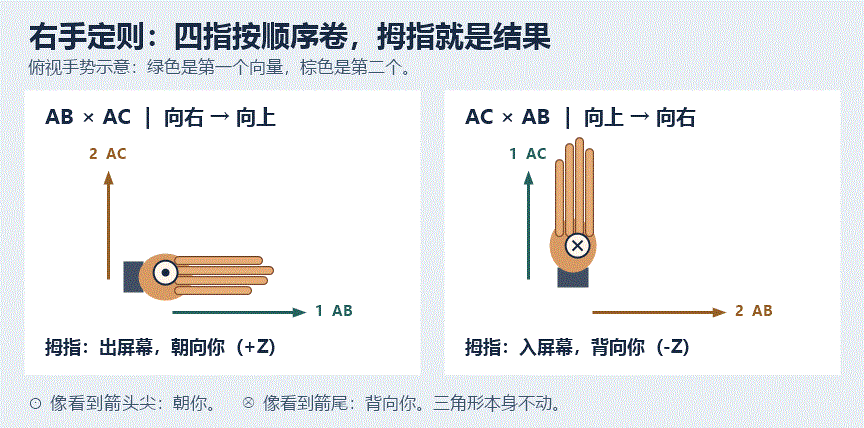

Dot and cross products
Move the light angle to change the shading. Swap B and C to reverse the normal without moving the triangle.
Starting WebGL...
- Face normal N
- Direction toward light L
- Dot product N · L
- Diffuse factor max(N · L, 0)
Open the interactive 3D right-hand model
Watch the right-hand rule (animated GIF)
Green is the first vector; brown is the second. The dot means the thumb points toward you, and the cross means it points away.
